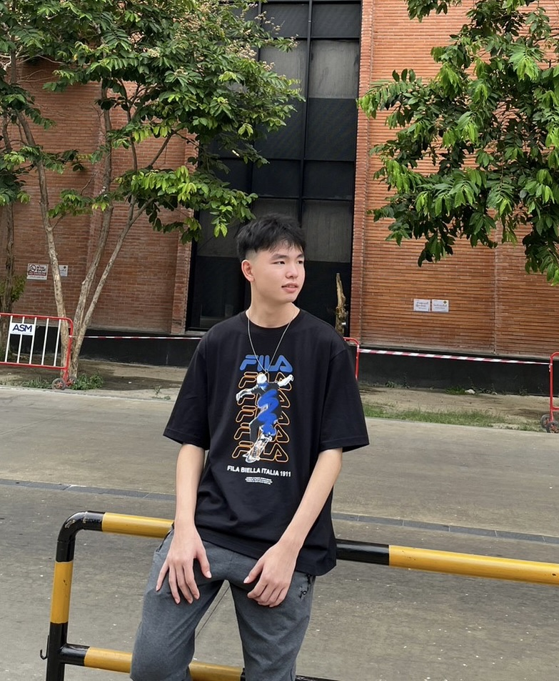

นายกิตติภณ คำนวล (หนุ่ม)

เลขนักศึกษา: 6609650186
ชั้นปีที่: 1
คณะวิทยาศาสตร์และเทคโนโลยี สาขาวิทยาการคอมพิวเตอร์
เบอร์โทร: 0636753551
อีเมล: Kittiphon.kam@dome.tu.ac.th
นายกิตติธัช เด่นสกุลประเสริฐ (มิว)
เลขนักศึกษา: 6609650079
ชั้นปีที่: 1
คณะวิทยาศาสตร์และเทคโนโลยี สาขาวิทยาการคอมพิวเตอร์
เบอร์โทร: 0988968584
อีเมล: Kittithat.den@dome.tu.ac.th
นายณัฏฐ์ ศรีสุวรรณกุล (ต้นไผ่)
เลขนักศึกษา: 6609650327
ชั้นปีที่: 1
คณะวิทยาศาสตร์และเทคโนโลยี สาขาวิทยาการคอมพิวเตอร์
เบอร์โทร: 0863510895
อีเมล: Natt.sri@dome.tu.ac.th